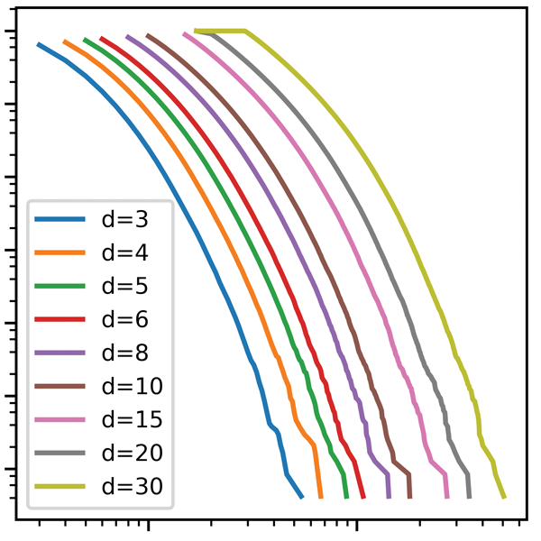

Clinical Associate Professor
Department of Psychology
University of Texas at Austin
|
|
|
 |
|
|
|---|
I will be offering a graduate-level course on fMRI data analysis called "Methods for fMRI" (PSY 394U) in Fall 2019 semester. I plan to re-re-structure the course quite a bit, covering basic concepts and steps of brain imaging data, with emphasis on scripting (with Python). We will also cover newer analysis methods based on machine learning, such as pattern classification. This course is an introductory class, so any graduate students interested in brain imaging are welcome to register.
I will be speaking at a satellite meeting on network neuroscience at NetSci2019 conference in Burlington, VT this coming May. Codes, data, notes, slides, and some figures are available through a GitHub repository.
Again this year, I will be offering my intro Python class as an undergraduate-level course (PSY 341K). It is desinged for students who have never taken a formal programming class before, and covers basic programming concepts such as if-else, for loops, reading / writing files, and arrays.
I will be teaching a new class called "Brain connectivity." This is an introductory course on network science and brain imaging, with some components of hands-on learning. It is designed for both quantitative scientists and brain imaging researchers; materials are organized in a way that no advanced knowledge in network science or brain imaging is required.
Data Analytics with Python (PSY 394U) will be offered again in the Spring 2019 semester! This is a graduate-level Python course covering various non-traditional data analysis techniques (machine learning, network analysis, text mining, etc.).
I have a small programming project for an undergrad for this coming fall semester.
It involves Python and 3D volume extraction from brain image data. This is part of
the project to port the fMRI study planning software tool into Python.
You can find more details at the
Eureka website.
Update: The position has already been filled. Thank you very much for your interest
I was at the OHBM (Organization for Human Brain Mapping) annual conference in Singapore in June. I presented a poster titled "Anti-fragmentation of resting-state fMRI networks with node-wise thresholding."
I will be offering a graduate-level course on fMRI data analysis called "Methods for fMRI" (PSY 394U) in Fall 2018 semester. I plan to re-structure the course quite a bit, covering new topics such as scripting and pipelines (mostly with NiPype) in addition to general topics on fMRI preprocessing / analyses such as registration, normalization, study design, GLM, and multiple comparison correction.
My intro Python class will be offered as an undergraduate-level course (PSY 341K). It is desinged for students who have never taken a formal programming class before, and covers basic programming concepts such as if-else, for loops, reading / writing files, and arrays.
My new class on data analytics with Python has started. It focuses on non-traditional data analysis techniques such as machine learning, network analysis, and text mining.
At least the front page, for now. Other pages will go online as soon as I finish them.
A new class titled "Data Analytics with Python" (PSY 394U) is now officially listed. This course is a sequel to my intro Python class, and covers various non-traditional data analysis techniques (machine learning, network analysis, text mining, etc.) using Python.
The paper titled "Anti-fragmentation of resting-state fMRI connectivity networks with node-wise thresholding" has been accepted for publication in Brain Connectivity.
Satoru Hayasaka, Ph.D.
Contact Information:
In person
SEA 2.214
108 E Dean Keeton St.,
Austin, TX 78712
Phone
+1-512-475-6177
Email
hayasaka_at_utexas_dot_edu
Twitter
@sathayas42
An old dog like me can learn a new trick! CSS and HTML powered by Satoru Hayasaka.